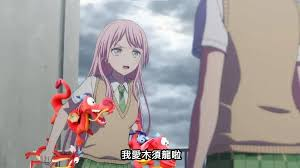
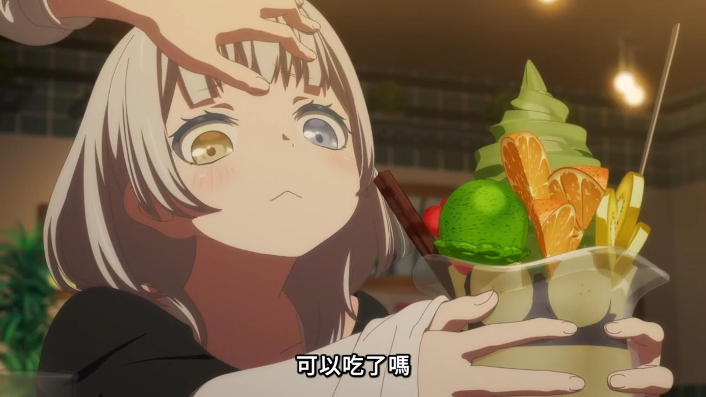
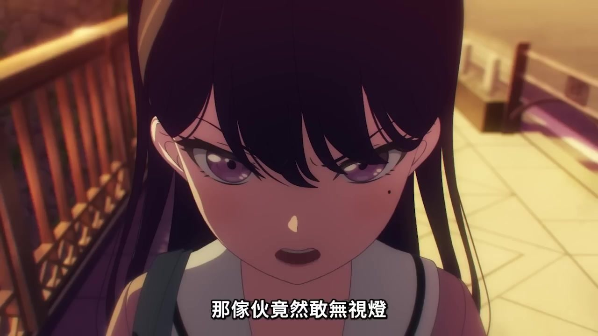
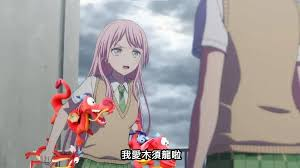
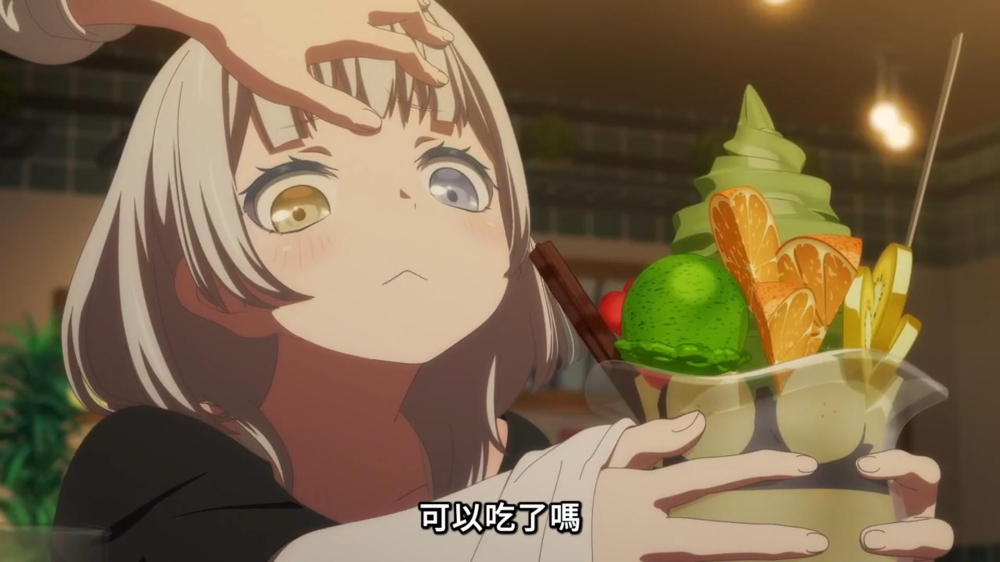
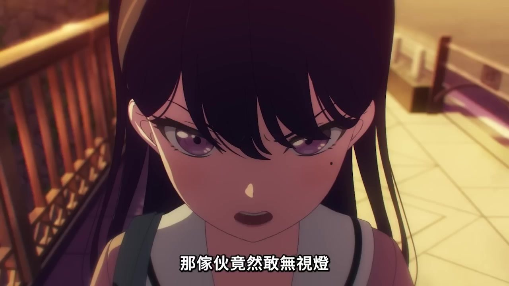

千早愛音
要樂奈
椎名立希| 名字 | 擔當 | 介紹 |
|---|---|---|
|
主唱 | 故事設定為羽丘女子學園高中一年級生，感受性跟普通人不同，被稱為「羽丘的怪女生」 |
 千早愛音 |
節奏吉他手 | 故事設定為羽丘女子學園高中一年級生，成績優秀。使用樂器為ESP ULTRATONE。立石稱她在姐姐的影響下玩過木吉他，但電吉他就幾乎沒碰過，在加入MyGO!!!!!後才開始學電吉他 |
| 長崎爽世 | 貝斯手 | 故事設定為月之森女子學園高中一年級生。使用樂器為ESP GB。小日向稱她在《BanG Dream!》的影響下開始玩貝斯，第一首練習的歌曲是Poppin'Party的《STAR BEAT!～ホシノコドウ～》 |
 要樂奈 |
主音吉他手 | 故事設定為花咲川女子學園中學三年級生，不時在Live House「RiNG」出沒。使用樂器為ESP POTBELLY。青木自5歲起就彈鋼琴，中學起自學木吉他，高中至大學都在學習古典音樂 |
 椎名立希 |
鼓手 | 故事設定為花咲川女子學園高中一年級生，在Live House「RiNG」打工。使用樂器為Pearl MASTERS MAPLE GUM系列爵士鼓。林在學生時期時，在吹奏樂部負責打擊樂器，有過打流行鼓和爵士鼓的經驗 |
| 封面 | 歌名 |
|---|---|
| 迷星叫 | |
| 音一会 | |
| 壱雫空 | |
| 砂寸奏／回層浮 | |
| 端程山 |